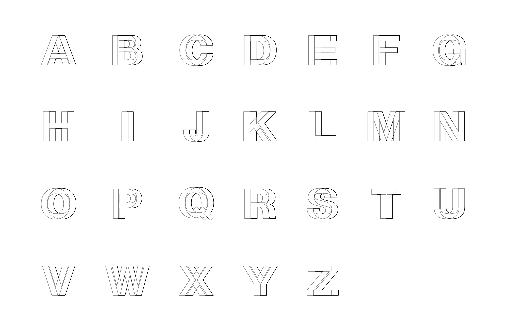

视差字母
由来
帮一位朋友设计他的博客网站 LOGO，设计之初用 “B” 来构思，不凑巧将两个同等大小的“B”叠加，且其中一个向左移动后便出现了视觉错位的效果。于是便一发不可收拾，在咖啡馆磨叽了一个下午......
绘制步骤
- Step 1: 将两个同等大小的字母叠加，顶部位置的字母向左移动当前字母笔画的宽，如图： 
- Step 2: 找到一个交叉点，将底部字母与顶部字母的交叉部分前移并遮盖，用不同颜色区分，如图：
- Step 3: 配色完成 P.s. 图中字母“J L T U V Y”与其他字母不同，采用的字体特性让这几个字母只有一个交集。😄